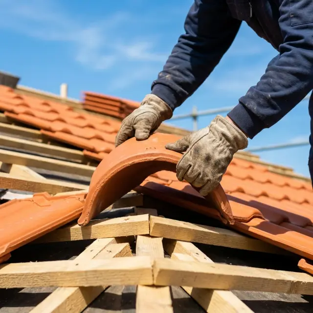
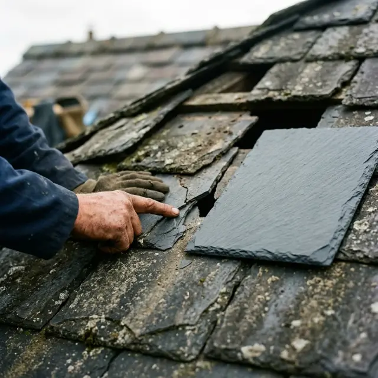
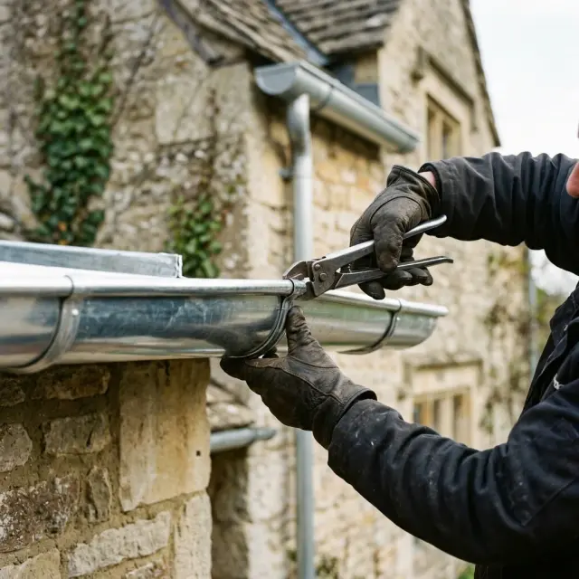
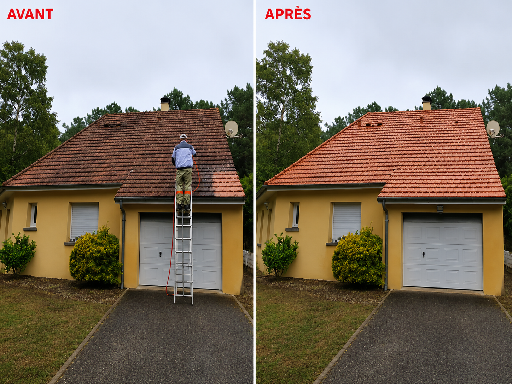
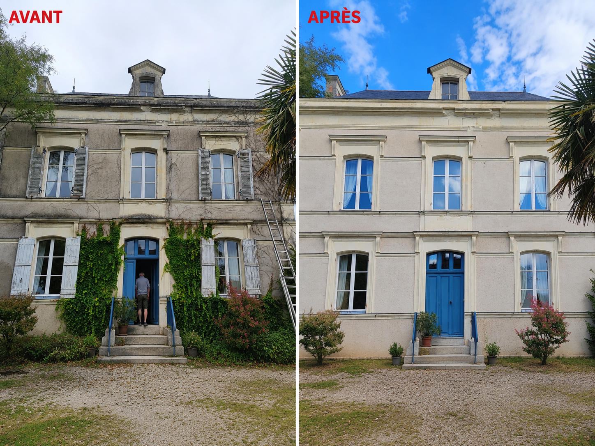
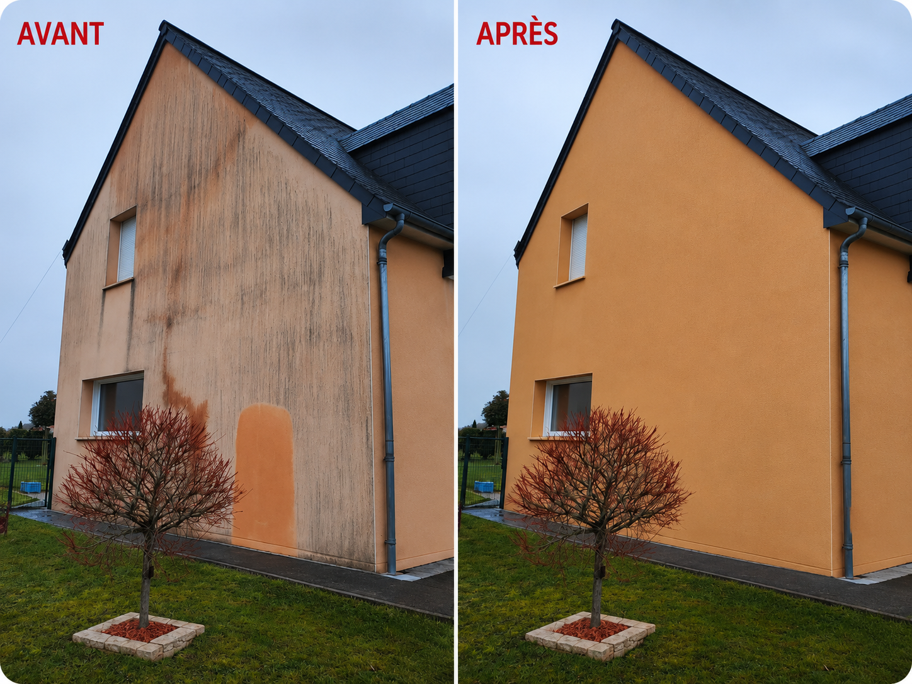
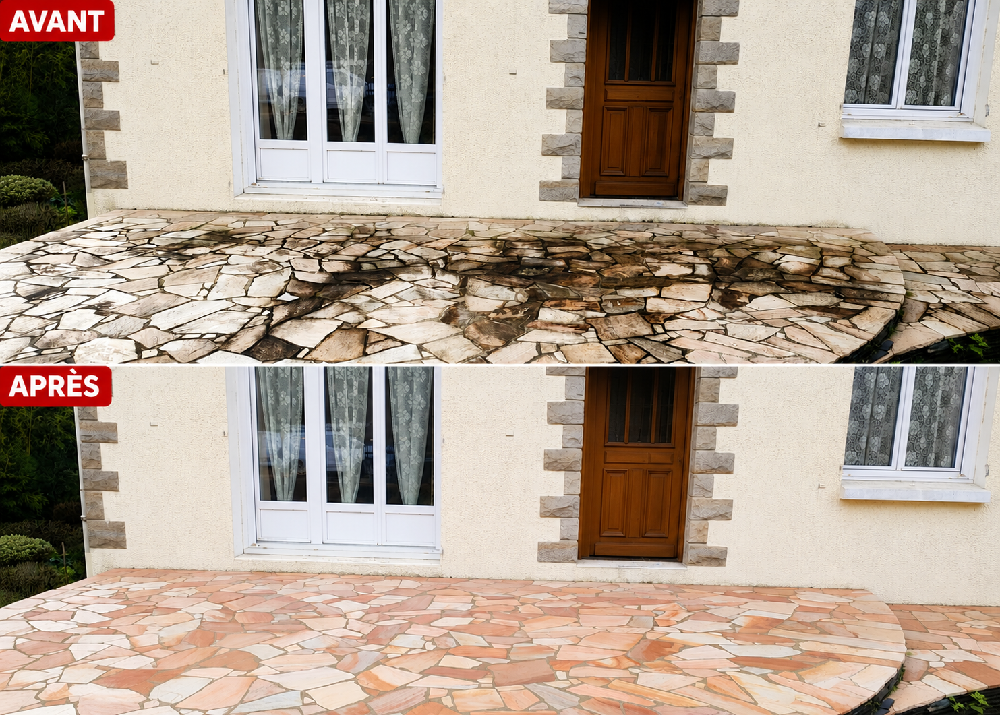
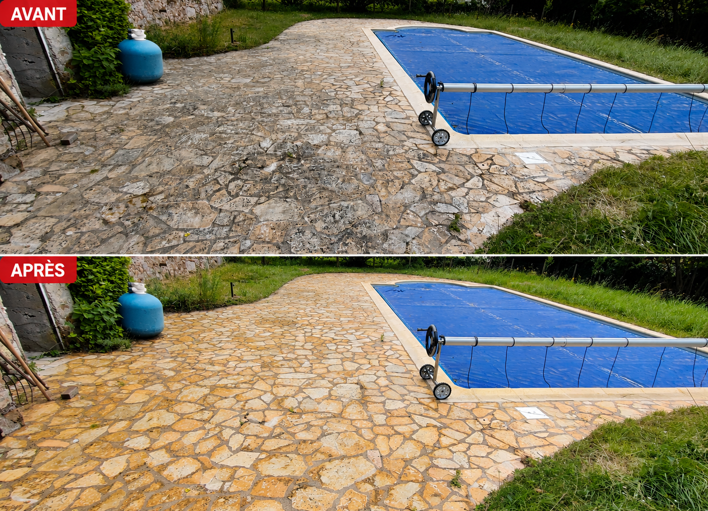
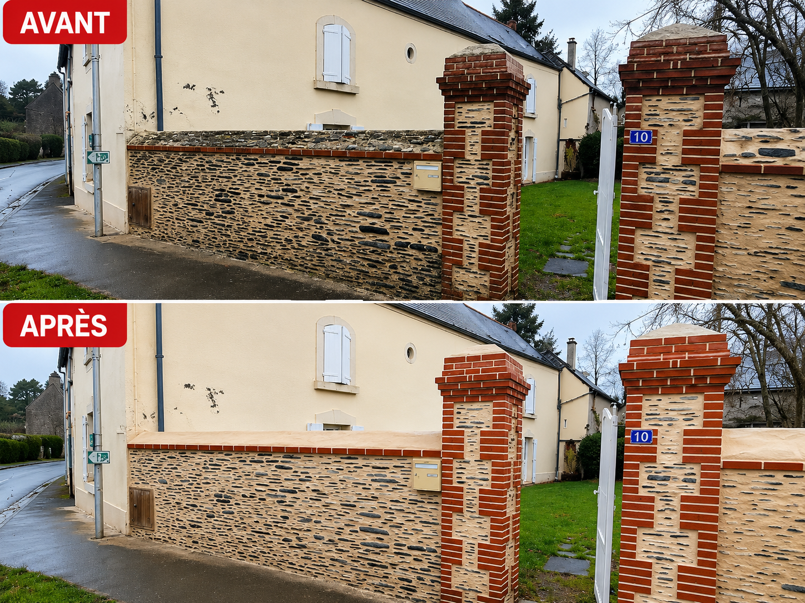

Rénovation de toiture
Nous intervenons sur toutes les toitures en remplaçant les éléments endommagés et en améliorant l'isolation de votre toiture pour une meilleure performance énergétique.
00 · Une expérience en 3D
L'art de couvrir. Le soin de protéger.
Couvreur certifié RGE, Général Couverture intervient à Angers et dans tout le Maine-et-Loire : rénovation de toiture, réparation de fuites, zinguerie.
Faites défiler pour voir votre toiture se construire
01 · La charpente se construit
Le savoir-faire prend forme.
Sablières, entraits, arbalétriers, pannes, chevrons : chaque pièce de bois a un rôle. Avant de couvrir, nous vérifions la structure, nous traitons ou nous remplaçons ce qui doit l'être.
02 · Les tuiles prennent place
La précision, jusque dans le détail.
Écran sous-toiture, liteaux, puis les tuiles posées de l'égout jusqu'au faîtage. Une pose dans les règles de l'art, pour une toiture qui dure.
03 · Votre toit s'ouvre
Ce qui vous protège vraiment.
Une toiture, ce n'est pas que des tuiles. Charpente, isolation, écran sous-toiture, liteaux, couverture : nous intervenons sur chaque couche, de la rénovation complète à la simple réparation.
04 · Une fuite ?
Du symptôme à la réparation.
Une auréole au plafond après la pluie : l'eau est entrée quelque part au-dessus. Nous intervenons rapidement pour diagnostiquer et sécuriser.
Derrière la cheminée, le solin s'est décollé. L'eau s'infiltre sous les tuiles et ruisselle sur l'isolant jusqu'au plafond.
Nous posons un abergement en zinc neuf et reprenons l'étanchéité. Intervention en urgence à Angers et dans le Maine-et-Loire.
Une fuite ? Appelez-nous05 · Explorer
Chaque toiture a son caractère.
Comparez les matériaux et projetez-vous : tuile terre cuite, tuile vieillie ou ardoise naturelle, à toute heure de la journée.
Couverture
Lumière
Glissez pour faire pivoter la maison
06 · Une nouvelle dimension
Comprendre, comparer, se projeter.
Devis gratuit et détaillé après visite sur site. Le prix annoncé est le prix payé.
Nos services
De la tuile à l'ardoise en passant par le zinc.

Nous intervenons sur toutes les toitures en remplaçant les éléments endommagés et en améliorant l'isolation de votre toiture pour une meilleure performance énergétique.

Fuites, cassures ou problèmes d'étanchéité, nous vous assurons une intervention rapide pour diagnostiquer et protéger la durée de vie de votre couverture.

Nous assurons la réparation et le remplacement des gouttières, chenaux et éléments de zinguerie afin d'assurer une protection optimale de votre façade.

Qui sommes-nous
Général Couverture est une entreprise angevine fondée par un couvreur passionné, fort de plus de 15 ans d'expérience dans la pose et la rénovation de toitures. Basés à Angers, nous intervenons sur l'ensemble du Maine-et-Loire pour accompagner particuliers et professionnels dans tous leurs projets de couverture.
Certifiés RGE (Reconnu Garant de l'Environnement), nous mettons un point d'honneur à vous proposer des matériaux de qualité et des prestations soignées, dans le respect des délais convenus. De la tuile à l'ardoise en passant par le zinc, chaque chantier est traité avec le même niveau d'exigence. La garantie décennale vous assure une protection durable sur l'ensemble de nos réalisations.
Réalisations
Des toitures qui retrouvent leur caractère.






Avis clients
★★★★★ 5,0 sur Google · 3 avis
Très bon travail, rapide et propre. La toiture est impeccable, je recommande sans hésiter.
Intervention suite à une fuite importante sur ma maison à Angers. Diagnostic rapide, devis clair et travaux réalisés dans les délais. Artisan sérieux et à l'écoute, le résultat est vraiment top !
Remplacement des gouttières bien géré, ponctuel et propre. Prix honnête et travail soigné. Je ferai de nouveau appel à eux.
Zone d'intervention
Questions fréquentes
Oui, nous proposons des interventions d'urgence à Angers et dans le Maine-et-Loire. Contactez-nous au 06 21 32 37 89 et nous nous déplaçons dans les meilleurs délais pour sécuriser votre toiture.
Absolument. Nous vous proposons un devis détaillé et gratuit après une visite sur site. Aucune mauvaise surprise : le prix indiqué est celui que vous payez.
Nous intervenons sur tous les types de toitures : tuiles, ardoises, zinc, bac acier et toitures-terrasses. Que ce soit pour une rénovation complète ou une simple réparation, nous avons les compétences nécessaires.
Oui, Général Couverture est titulaire de la garantie décennale et certifié RGE (Reconnu Garant de l'Environnement), ce qui vous permet d'accéder aux aides de l'État pour vos travaux de rénovation énergétique.
Contact
Besoin d'un devis ou d'une intervention rapide ? Appelez-nous directement, nous répondons à toutes vos demandes à Angers et dans le Maine-et-Loire.
06 21 32 37 89Du lundi au samedi · 8h30 – 18h · Devis gratuit